宁波三日
和朋友们在宁波的3天快乐时光
“不要因离别而伤感，告别才能再见。无论暂别或久别，朋友终会再相见”
——赫理查德·巴
预感今年的国庆不是特别忙，于是便和我的几个好朋友（浙江F4）相约玩耍，本来计划去舟山东极岛看海，后来因为杰哥不能出市而改变行程，于是我和高便去宁波找boyuer姐和朕杰，说走就走!
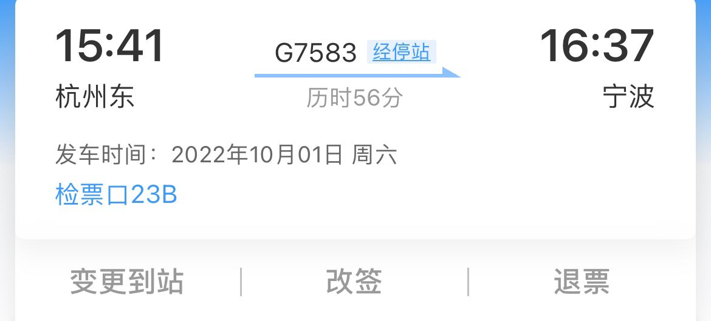
高铁上的恐怖场景
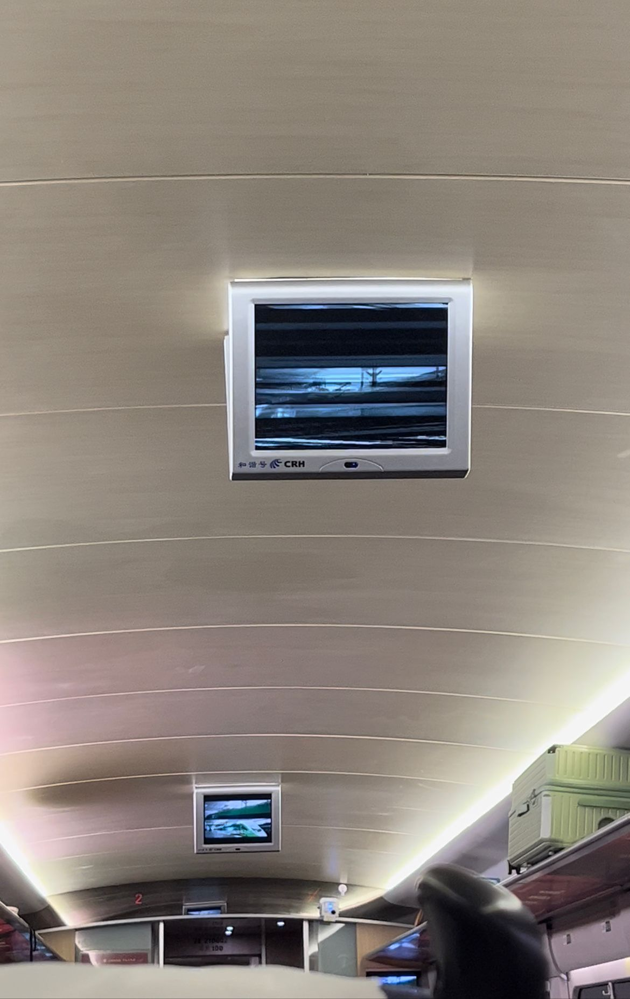
宁波站到啦 已经迫不及待的见到我的好朋友了
宁波出站口因为疫情弯弯绕绕和迷宫一样，我一直跟着人群走都没有注意到来接我们的boyuer姐和朕杰，幸好朕杰看到了我把我给拦下了（5555）
晚上我们去吃了万达里面的粮策
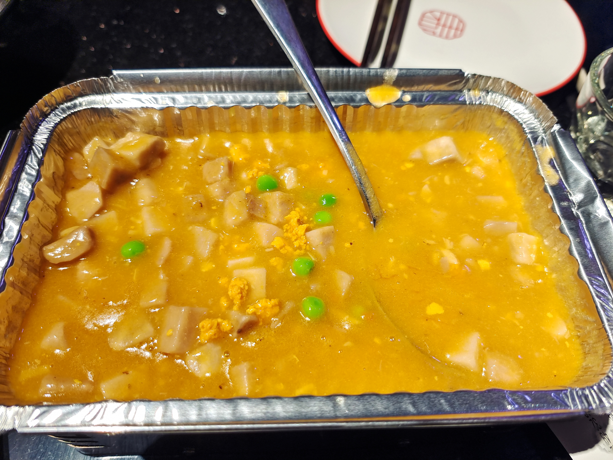


让我简单锐评一下糖醋里脊真心不推荐，感觉做得没有HDU好吃，炸的比较硬。第二章的汤喝起来很像山西的臊子面里的臊子（hhh想家了），除了素菜最推荐点的就是这个火焰鸡，烤的火候非常好，鸡肉也很嫩，非常nice
吃完饭我们又去和高的两个朋友在一个小酒吧喝了点酒，我点的长岛冰茶（有点小贵 一杯要70CNY），说实话我有点社恐感觉没放开。。
第一天
那天我和高在街上闲逛，去罗森买了点辣条深夜放毒（感觉自己可憨嘞），我买的霸王丝，高买的麻辣王子特辣，两个人被辣的说不出来话了，然后就一直到了34点才到酒店睡下，一觉睡到了中午（真真真真真真真的对不起boyuer姐和朕杰，自觉邦邦挨两拳）于是计划的天一阁没有去成（5555）
这个蛋糕超好吃
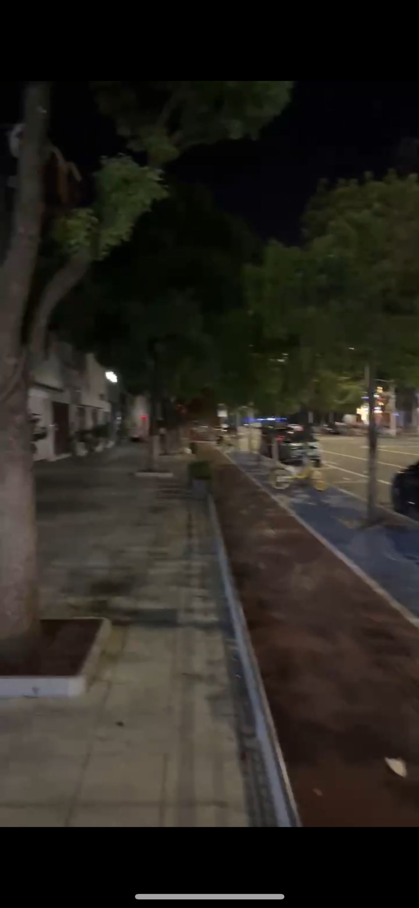
宁波天一旁边的的一个哥特式建筑，好像是天主教堂
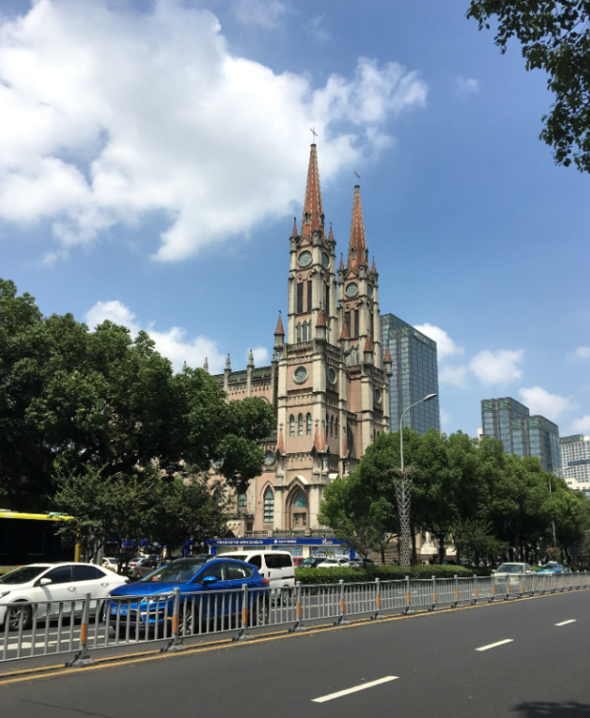
下午去了__小红书__博主们强烈推荐的东钱湖，但是感觉与事实严重不符
不过我们还是拍了很多好看的照片，我就不放出来了哈哈
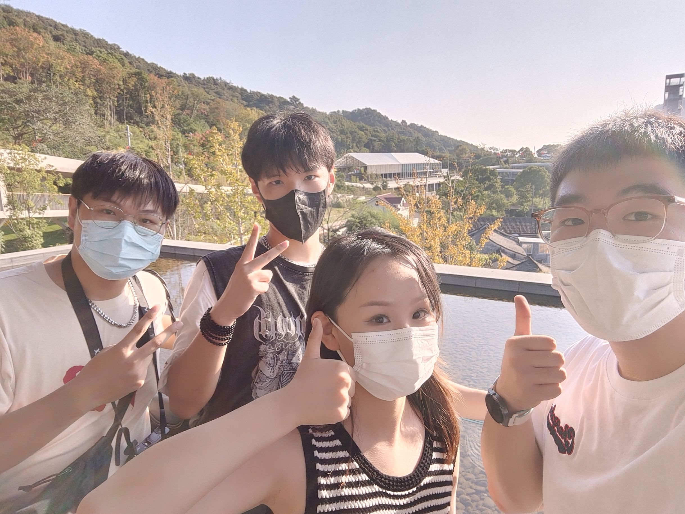
景区里面的一个小村落？（好狗不挡道）
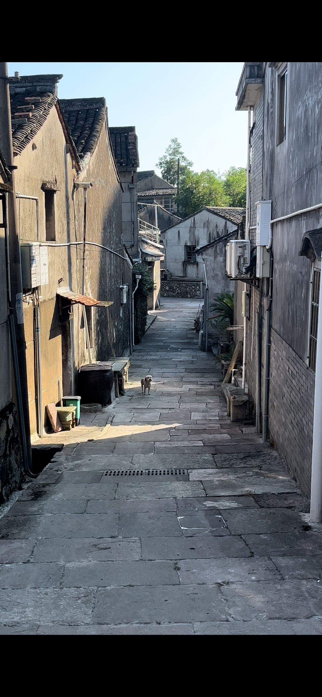
去完东钱湖又去唱了会歌（高不愧是麦王哈哈哈）

吃了顿小饭，在街上溜达溜达就去休息了，明天千万不能迟到（__认真__）
吃饭送的小跳蛙
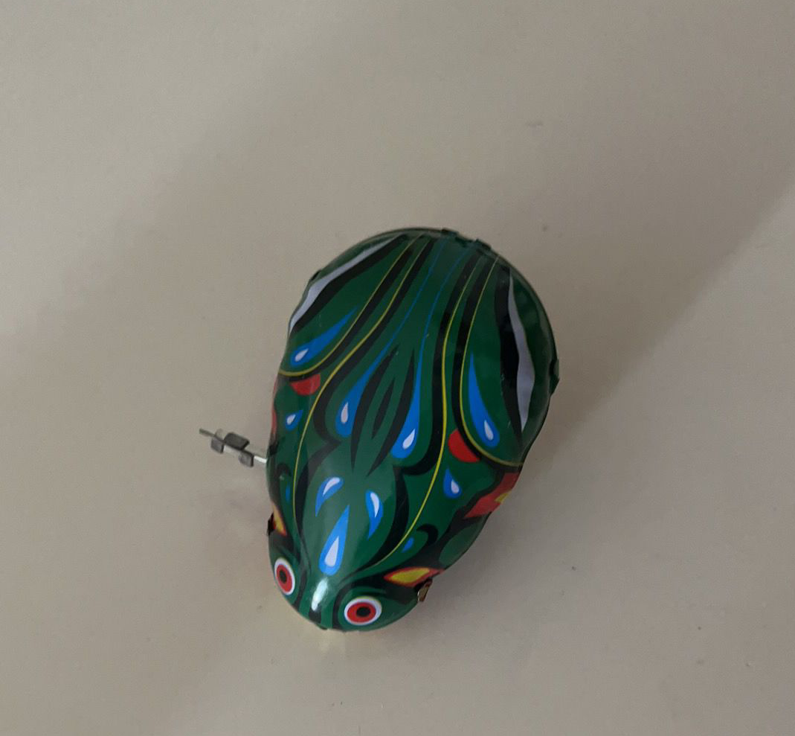
路过了小鹏专卖店，我好像有台属于自己的小车，开着它载着我的伙伴们去旅行
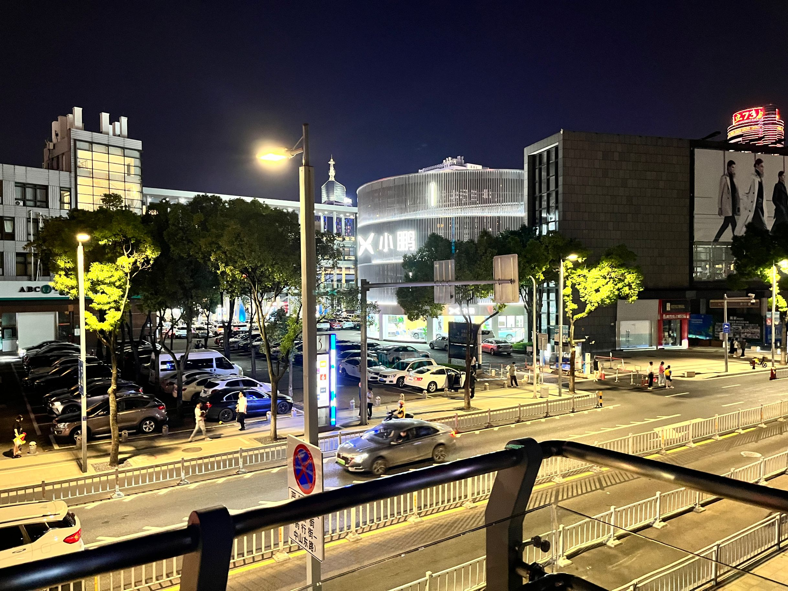
第二天
这天我们去做了陶塑，手笨的我感觉好难啊，最后还是小姐姐帮我塑好了型
我和朕杰这两个真ikun得到了快乐hhhh
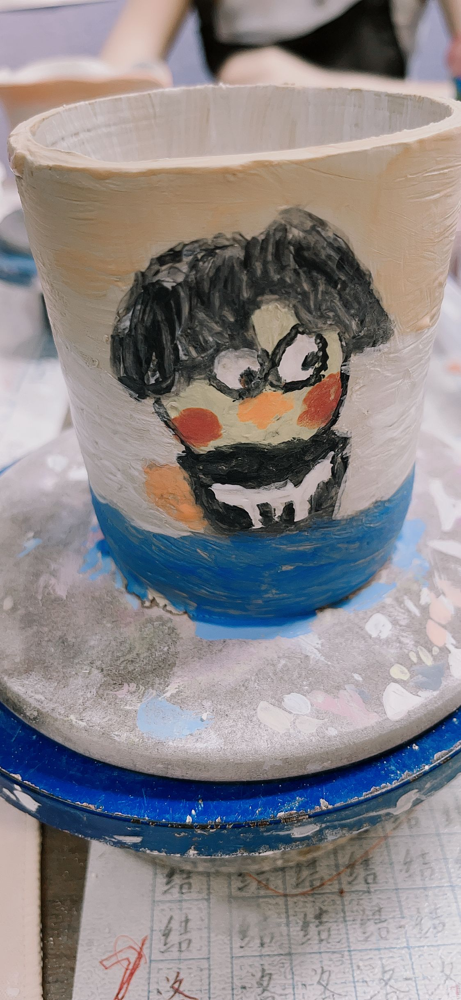
看看我们的成果吧！
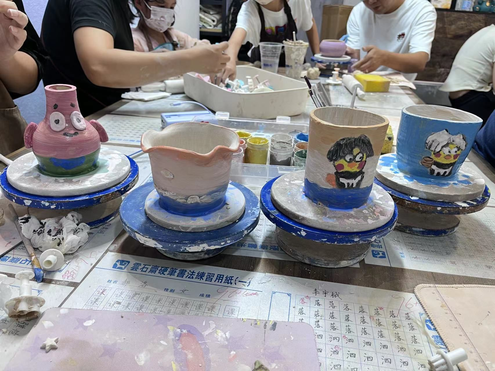
做完陶塑，我们四个又去宁波鼓楼里转了转，u1s1是有点小的
找了个麦当当在里面聊人生聊理想哈哈哈哈哈
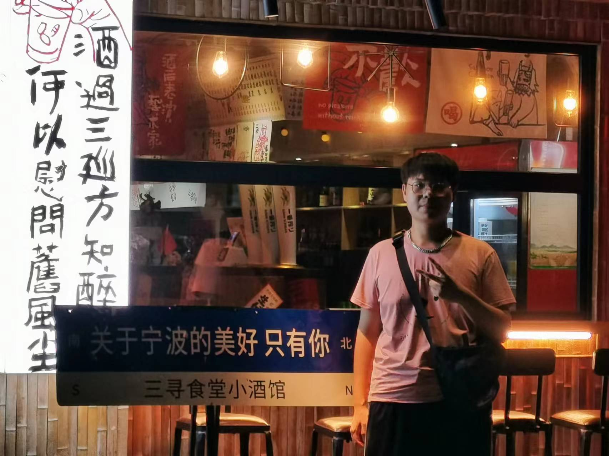
The Last Day
去看了小狗狗（boyuer怕猫哈哈哈哈）
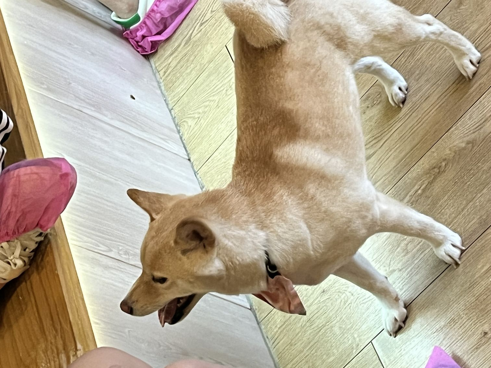
boyuer姐顺便还给我进行了一波占卜，感觉都不准，希望她好好学一学，下次争取成占卜大师
离别
再见了我的好朋友们 寒假见！！！
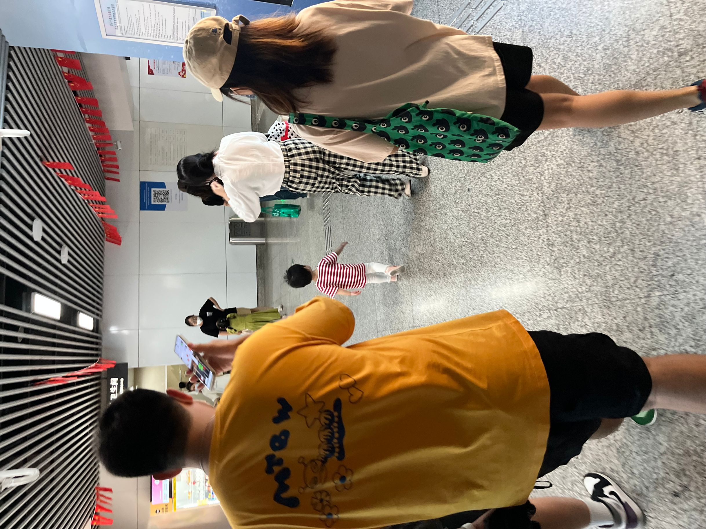
呜呜呜呜呜呜呜呜呜呜呜呜呜
写在最后
一些小伤感:没吃上酒店的早餐
感觉3天好短一瞬间就过去了，之后的再相见，也不过短短几天，真的好难过
读了大学 顺其自然的孤独感蜂拥而至 可能这也让我更加珍惜友谊
天下没有不散的宴席 能怎么办呢，难过还是得别离，但我相信坚固的友谊不怕分别
想说的话还有很多，总有种戛然而止的感觉。
剩下的之后再写吧